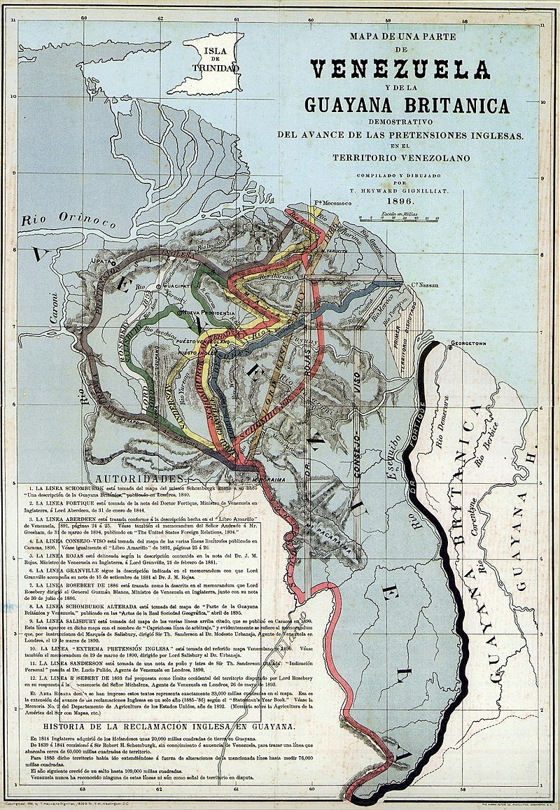

 Los arahuacos y los kalinagos (caribes) estuvieron entre los primeros habitantes indígenas del territorio. Eran nómadas organizados en familias de 15 o 20 integrantes, y vivían de la caza y de la pesca de tiburones. A la llegada de los europeos a Guyana había 500 000 habitantes (estimaciones más moderadas la reducen a aproximadamente 20 000 a 30 000; el territorio no habría podido mantener a medio millón, una cantidad solo un poco menor a la población total en la actualidad). Hoy quedan cerca de 45 000 originarios, divididos en nueve grupos étnicos, de los cuales solo siete mantienen su identidad y cultura tradicionales. Las desembocaduras del Esequibo y el Orinoco, y toda la costa de Guayana fue conocida y explorada por Alonso de Ojeda y Pedro Alonso Niño, que llegaron a Demerara en 1499, como queda referido por Juan de la Cosa, quien cartografió además la zona. El punto en el que tocaron tierra fue llamado Cabo de San Alonso.15 Entre 1530 y 1531, Diego de Ordás conquista y coloniza toda la costa guayanesa, y en 1594 España toma posesión oficialmente de la Provincia de Guayana,16 que comprendía la Guayana Esequiba actualmente reclamada por Venezuela. Se cree que hasta la invasión holandesa de 1615, más de 2000 colonos españoles ocuparon este territorio (nuevamente las estimaciones más moderadas la reducen a un máximo de cien o poco más colonos hispanos y el resto hasta 2000 serían indios o mestizos civilizados venidos de la actual Venezuela). Impulsados por la leyenda de El Dorado, la Compañía Neerlandesa de las Indias Occidentales construyó en el año 1616 el primer fuerte de Guyana, que entonces comprendía tres colonias: Demerara, Berbice y Esequibo. A mediados del siglo xviii los ingleses habían comenzado una introducción masiva de esclavos africanos para trabajar en las plantaciones de la costa. En 1763, el africano Cuffy (actual héroe nacional), encabezó una rebelión en Berbice que fue reprimida sangrientamente. En septiembre de 1777 Luis de Unzaga y Amézaga creó la Capitanía General de Venezuela y en dicho territorio integró la región de Guayana. Poco después envió expediciones lideradas por el también malagueño Manuel Centurión, para colonizarla y comprobar la no existencia de tropas británicas, que huyeron ante el Plan de Defensa de Unzaga y el ingeniero Crame. Posteriormente el capitán general Unzaga nombró a Manuel Centurión como gobernador de Guayana y le dio instrucciones para colonizar diversos pueblos y permitir el librecomercio, dinamizando su economía.17 En 1796, prácticamente la mitad de la Guayana Neerlandesa fue tomada por los ingleses. Las colonias de Esequibo, Demerara, y Berbice fueron cedidas oficialmente al Reino Unido en el Tratado Anglo-Neerlandés de 1824 y en el Congreso de Viena en 1815. En 1831 se consolidaron como Guayana Británica. Los esclavos que escapaban de las plantaciones se iban a vivir a las selvas con los indígenas. El mestizaje racial y cultural dio origen a los denominados cimarrones. A estos grupos se sumaron los chinos, javaneses e indios, traídos por los ingleses como mano de obra barata. Los ideales independentistas lograron canalizarse a partir de 1950 con el Partido Popular Progresista (PPP); un programa de independencia nacional y de mejoras sociales, y a largo plazo, de transformación socialista de la sociedad. El plan fue llevado a cabo por Cheddi Jagan por tres períodos sucesivos en el cargo de primer ministro (1953-1961). Los arahuacos y los kalinagos (caribes) fueron dos de los primeros grupos indígenas que habitaron en Guyana. Estos pueblos eran nómadas y se organizaban en familias de 15 o 20 integrantes, viviendo principalmente de la caza y la pesca de tiburones. Cuando los europeos llegaron a Guyana, se estima que había alrededor de 500 000 habitantes, aunque algunas estimaciones más moderadas reducen esta cifra a 20 000 o 30 000. Hoy en día, solo quedan cerca de 45 000 indígenas en Guyana, divididos en nueve grupos étnicos, de los cuales solo siete mantienen su identidad y cultura tradicionales. Los españoles exploraron y conquistaron la costa guayanesa en el siglo XVI, y en 1594 España tomó posesión oficialmente de la Provincia de Guayana, que incluía la Guayana Esequiba, actualmente reclamada por Venezuela. Hasta la invasión holandesa de 1615, se cree que más de 2000 colonos españoles ocuparon este territorio. Sin embargo, estimaciones más moderadas reducen esta cifra a un máximo de cien o poco más de colonos hispanos, y el resto serían indios o mestizos civilizados venidos de la actual Venezuela. Impulsados por la leyenda de El Dorado, los holandeses construyeron el primer fuerte de Guyana en 1616. En el siglo XVIII, los ingleses introdujeron masivamente esclavos africanos para trabajar en las plantaciones de la costa. En 1763, el africano Cuffy encabezó una rebelión en Berbice que fue reprimida sangrientamente. En septiembre de 1777, Luis de Unzaga y Amézaga creó la Capitanía General de Venezuela e integró la región de Guayana en dicho territorio. Poco después, envió expediciones lideradas por Manuel Centurión para colonizar la región y comprobar la no existencia de tropas británicas. Posteriormente, el capitán general Unzaga nombró a Manuel Centurión como gobernador de Guayana y le dio instrucciones para colonizar diversos pueblos y permitir el libre comercio, dinamizando así su economía. En 1796, casi la mitad de la Guayana Neerlandesa fue tomada por los ingleses. Las colonias de Esequibo, Demerara y Berbice fueron cedidas oficialmente al Reino Unido en el Tratado Anglo-Neerlandés de 1824 y en el Congreso de Viena en 1815. En 1831, se consolidaron como Guayana Británica. Los esclavos que escapaban de las plantaciones se iban a vivir a las selvas con los indígenas, y el mestizaje racial y cultural dio origen a los denominados cimarrones. A estos grupos se sumaron los chinos, javaneses e indios, traídos por los ingleses como mano de obra barata. Los ideales independentistas comenzaron a canalizarse a partir de 1950 con el Partido Popular Progresista (PPP), liderado por Cheddi Jagan. El partido tenía un programa de independencia nacional y de mejoras sociales, y a largo plazo, de transformación socialista de la sociedad. Jagan fue primer ministro por tres períodos sucesivos (1953-1961) y llevó a cabo el plan de independencia y transformación social.